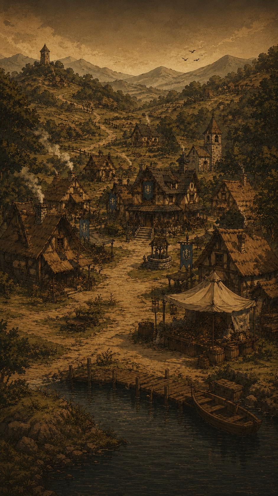
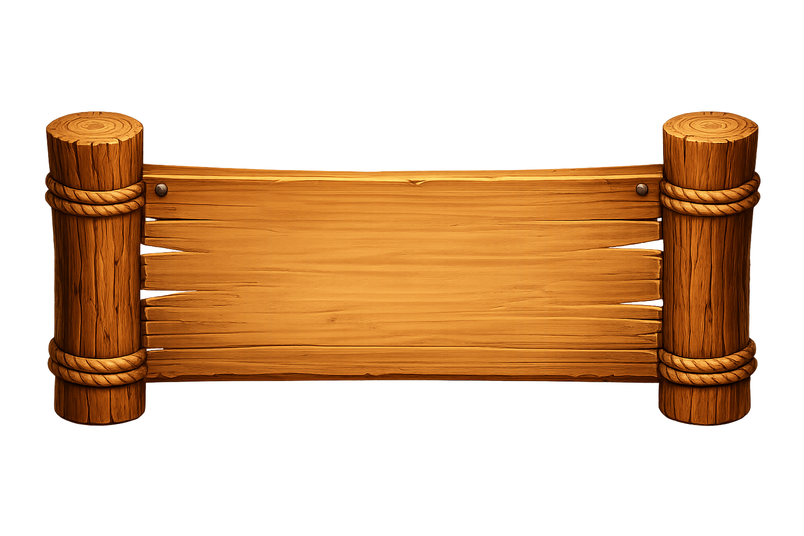
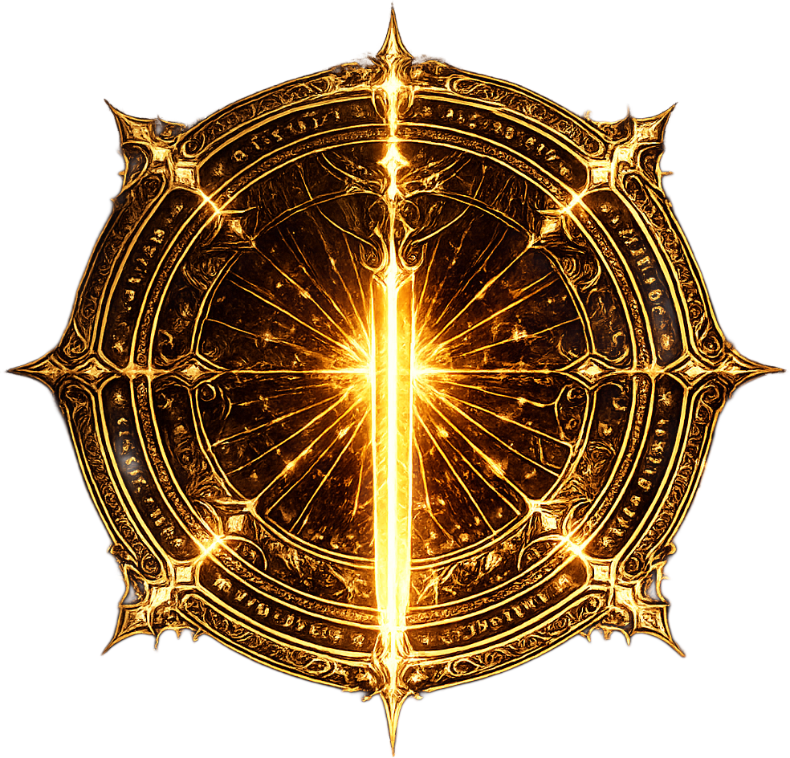

英雄の旅
剣と魔法
運命の地
王国の闇
克利沃爾
CHRONICLES OF CLIVOR
✦
CHRONICLES OF
CLIVOR
クロニクル・オブ・クリヴォル · RPG · FANTASY
Um reino à beira do colapso.
Uma profecia. Uma escolha.
O destino de Clivor está nas tuas mãos.
PRÓLOGO
—
Chronicles of Clivor
克
Clivor
arraste o anel para girar · toque na classe em foco para entrar
Entrando em Clivor...
⚔
—
LV 1 · EXP 0/100
◈ 0
😐 Neutro


FLORESTA DE CLIVOR
A névoa da manhã envolve os galhos...
MANHÃ
05:00
MODO ATIVO
04:00
🌲
Floresta

Estalagem

Taverna

Ferreiro

Quadro (Nv.4)

Templo

Torre

Vilarejo da Pedra Branca
🗿
Cidade das Pedra
 🔒
🔒Ponte da Fronteira
❔
↩
Voltar ao Vilarejo
⛩️
Travessia de Kurogane
↩
Voltar à Ponte
🔭
Observatório
⛩️
Entrar em Kurosaki
🔍
MAPA-MÚNDI
Vilarejo da Pedra Branca (você está aqui)
🗿
Cidade das Pedra
🔒Ponte da Fronteira
NARRADOR
O mundo de Clivor aguarda...

☠️ CEIFADA! ☠️

—
—
🐉 Sopro
VS

—
—
—
—
Turno 1 — ⚔ Sua Vez